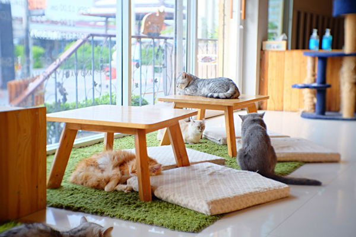
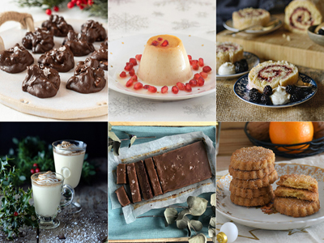
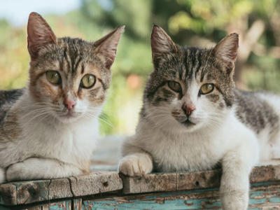

| Reservaciones | Menú | Donaciones | Adopción | Información de nuestros gatos | Galería | Datos sobre gatos | Contacto |
En Av. Corrientes 1504 vas a poder comer ricos postres y disfrutar de la compañía de los gatitos del local. ♥
Podés encontrar variedad de bebidas frías y calientes junto a opciones de comida para cualquier persona. Algunos de nuestros postres son:
Todos ellos son inofensivos, pero se debe tener cuidado con el trato que se les dé. Cada uno tiene su personalidad y carácter, por lo que podrás pedir más información sobre ellos a los cuidadores de turno. Hay que mantener un espacio seguro para ambas partes y así poder disfrutar el momento.
| Nombres | Características |
| Matcha | Tranquilo y cariñoso |
| Capuccino | Enérgico y glotón |
| Submarino | Juguetón y amigable |
| Té con leche | Solitario y vago |